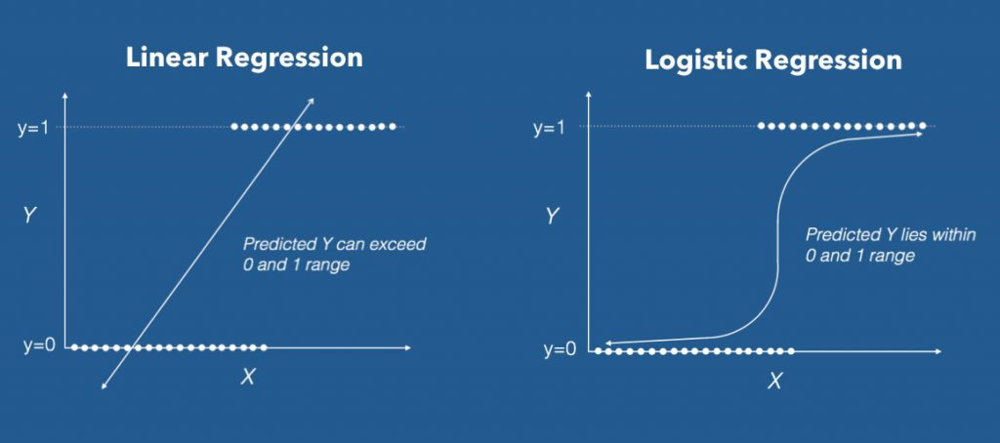
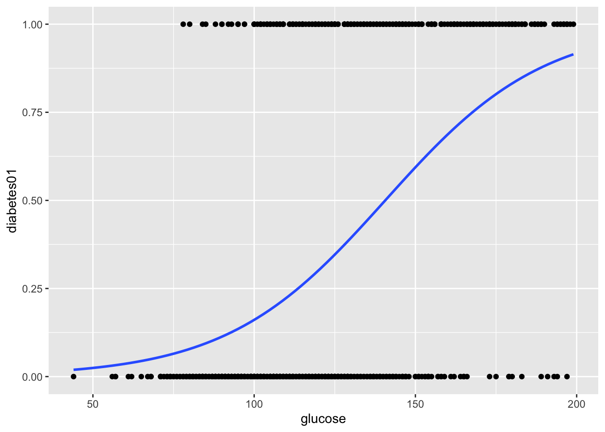

#Regresión Logística
En una regresión logística la variable respuesta (dependiente) es una variable binaria (dicótoma en términos generales), y las variables predictoras (independientes) pueden ser binarias, categóricas o continuas.
Logistic Regression vs Linear Regression 
Como la variable respuesta solo puede tener valores entre 0 o 1, y las variables independientes pueden ser continuas, con cualquier valor real, para formular un modelo de regresión logística se hace una transformación de probabilidades a ‘razones de probabilidades’ (en inglés odd ratios (ORs)), o proporción de casos favorables a desfavorables.
La transformación tiene esta forma:
\[OR_i = \frac{\pi}{1-\pi} \qquad (1)\] donde \(\pi\) es la probabilidad de que el evento dependiente (\(Y\)) ocurra; luego se calcula el logaritmo del \(OR\), el cual se denomina logit:
\[logit(\pi) = log\frac{\pi}{1-\pi} \qquad (2)\]
El modelo para la regresión, con dos variables independientes (\(x_1\), \(x_2\)), es:
\[logit(\pi)=\beta_0 + x_1\beta_1 +x_2\beta_2\qquad (3)\]
##EJEMPLO 1: Predicción de alta presión en mujeres Vamos a explorar un modelo de diagnóstico de alta presión, a partir de datos de mujeres (n = 189), en relación a su edad, estado de menopausia, y el índice de masa corporal. Los datos están codificados como variables binarias:
| Variables | Nombre | Código |
|---|---|---|
| Edad (años) | age | 0:≤50, 1>50 |
| Alta presión | dxhigh | 0:no, 1:sí |
| BMI (kg/m2) | bmi | 0:≤25, 1:>25 |
| Menopausia | menop | 0:pre-, 1:menopausia |
Para este modelo utilizaremos la función glm (general linear model):
#leemos los datos:
library(readxl)
hbp <- read_excel("data/mod_empiricos.xlsx",
sheet = "hbp")#modelo logístico:
highbp <- glm(dxhigh ~ age + bmi + menop, data = hbp,
family=binomial(logit))
#resumen de los resultados:
summary(highbp)##
## Call:
## glm(formula = dxhigh ~ age + bmi + menop, family = binomial(logit),
## data = hbp)
##
## Deviance Residuals:
## Min 1Q Median 3Q Max
## -1.0392 -0.8084 -0.6580 1.3222 2.0781
##
## Coefficients:
## Estimate Std. Error z value Pr(>|z|)
## (Intercept) -2.0367 0.4550 -4.476 7.61e-06 ***
## age 0.6376 0.4920 1.296 0.195
## bmi 0.6165 0.4620 1.334 0.182
## menop 0.4484 0.4887 0.918 0.359
## ---
## Signif. codes: 0 '***' 0.001 '**' 0.01 '*' 0.05 '.' 0.1 ' ' 1
##
## (Dispersion parameter for binomial family taken to be 1)
##
## Null deviance: 218.39 on 188 degrees of freedom
## Residual deviance: 206.60 on 185 degrees of freedom
## AIC: 214.6
##
## Number of Fisher Scoring iterations: 4#obtener los coeficientes como ORs:
exp(cbind(OR = coef(highbp), confint(highbp)))## OR 2.5 % 97.5 %
## (Intercept) 0.1304608 0.0491431 0.2984743
## age 1.8919266 0.7125247 4.9772745
## bmi 1.8523471 0.7836975 4.9120329
## menop 1.5658815 0.6016810 4.1448987En este caso las variables independientes no son binarias (0,1) sino datos continuos. No se calculan los \(OR\) (ni logit), y el resultado son sólo los coeficientes de la regresión.
# paquetes
library(tidyverse)
library(caret)
library(mlbench)
# cargar datos (estos son directamente del paquete mlbench, en su caso debe usar readxl o similar)
data("PimaIndiansDiabetes2", package = "mlbench")
# inspeccionar los datos
sample_n(PimaIndiansDiabetes2, 6)## pregnant glucose pressure triceps insulin mass pedigree age diabetes
## 379 4 156 75 NA NA 48.3 0.238 32 pos
## 371 3 173 82 48 465 38.4 2.137 25 pos
## 689 1 140 74 26 180 24.1 0.828 23 neg
## 170 3 111 90 12 78 28.4 0.495 29 neg
## 34 6 92 92 NA NA 19.9 0.188 28 neg
## 288 1 119 86 39 220 45.6 0.808 29 pos# Split the data into training and test set
set.seed(123)
training.samples <- PimaIndiansDiabetes2$diabetes %>%
createDataPartition(p = 0.8, list = FALSE)
train.data <- PimaIndiansDiabetes2[training.samples, ]
test.data <- PimaIndiansDiabetes2[-training.samples, ]library(MASS)
# Fit the model
model <- glm(diabetes ~., data = train.data, family = binomial)
# Summarize the final selected model
summary(model)##
## Call:
## glm(formula = diabetes ~ ., family = binomial, data = train.data)
##
## Deviance Residuals:
## Min 1Q Median 3Q Max
## -2.8046 -0.6712 -0.3765 0.6316 2.6294
##
## Coefficients:
## Estimate Std. Error z value Pr(>|z|)
## (Intercept) -1.026e+01 1.392e+00 -7.370 1.71e-13 ***
## pregnant 3.562e-02 6.256e-02 0.569 0.56911
## glucose 3.969e-02 6.817e-03 5.822 5.80e-09 ***
## pressure -3.277e-03 1.306e-02 -0.251 0.80184
## triceps -1.009e-03 1.971e-02 -0.051 0.95916
## insulin -6.832e-04 1.445e-03 -0.473 0.63645
## mass 8.291e-02 3.171e-02 2.615 0.00893 **
## pedigree 1.619e+00 5.010e-01 3.231 0.00123 **
## age 3.520e-02 2.001e-02 1.759 0.07849 .
## ---
## Signif. codes: 0 '***' 0.001 '**' 0.01 '*' 0.05 '.' 0.1 ' ' 1
##
## (Dispersion parameter for binomial family taken to be 1)
##
## Null deviance: 399.60 on 314 degrees of freedom
## Residual deviance: 278.74 on 306 degrees of freedom
## (300 observations deleted due to missingness)
## AIC: 296.74
##
## Number of Fisher Scoring iterations: 5library(ggplot2)
#pasar datos de diabetes "pos" y "neg" a 1s y 0s
diabetes01 <- ifelse(PimaIndiansDiabetes2$diabetes == "pos", 1, 0)
#gráfica con curva logística
ggplot(PimaIndiansDiabetes2, aes(x=glucose, y=diabetes01, na.rm = TRUE)) +
geom_point() +
geom_smooth(method = "glm",
method.args = list(family = "binomial"),
se = FALSE)
# Make predictions
probabilities <- model %>% predict(test.data, type = "response")
predicted.classes <- ifelse(probabilities > 0.5, "pos", "neg")
# Prediction accuracy
observed.classes <- test.data$diabetes
mean(predicted.classes == observed.classes, na.rm = TRUE)## [1] 0.8051948